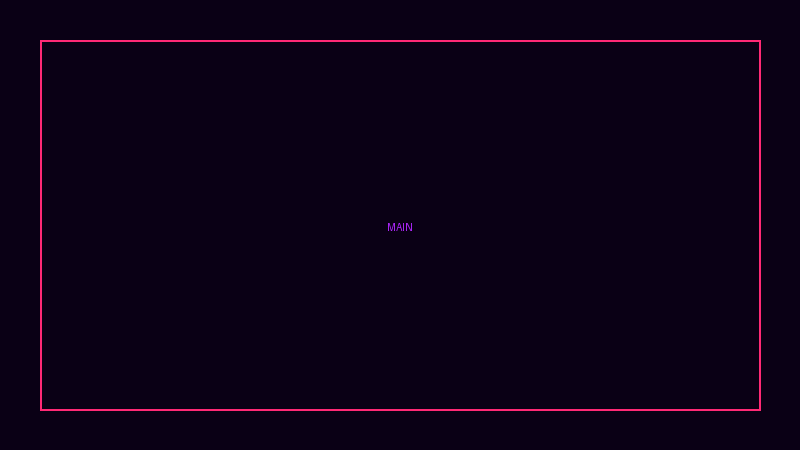
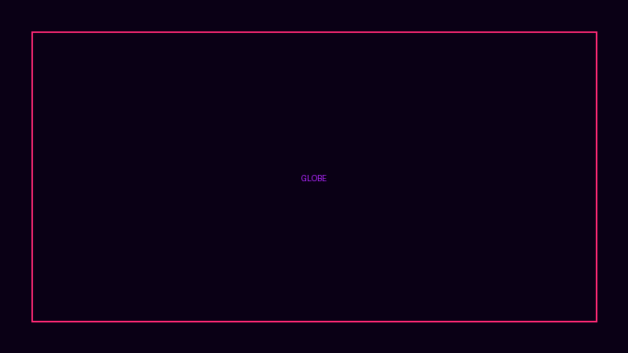
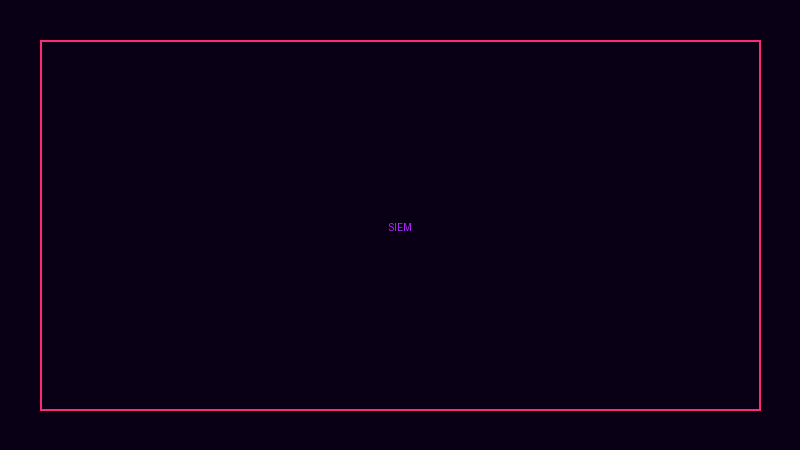

The desktop WAF that runs entirely on your machine. Real-time threat detection powered by Rust, Go, and C. Zero cloud dependency. Full synthwave dashboard included.
Latest improvements to TRAKSHYA WAF.
Local npm package with trakshya-waf, trakshya-cli, and trakshya-install commands under npm-package/.
cd npm-package && npm linktrakshya-install install --mode=local
PowerShell installer for Windows with local and service modes. NSSM-backed Windows service installation.
trakshya-install.ps1 install --mode=localtrakshya-install.ps1 install --mode=service
Systemd services, nginx reverse proxy config, and /opt/trakshya-waf layout for production servers.
deploy/production-setup.shdeploy/systemd/*.servicedeploy/nginx/trakshya-dashboard.conf
GitHub Actions for validation, regression, dependency scanning, OpenAPI schema checks, and compose healthgating.
validate.yml · regression.ymldependency-scan.yml · openapi-validation.yml
Multi-service compose stack with healthchecks, Traefik-ready service names, and per-service Dockerfiles.
docker-compose.stack.ymldashboard/Dockerfile · go/Dockerfile · rust/krsna-proxy/Dockerfile
Self-signed localhost CA + cert generator for testing TLS paths without external dependencies.
make certsnode server.js → https://127.0.0.1:8443
Every feature runs locally on your machine. No data leaves your network.
SQLi, XSS, RFI, CMDi, path traversal, LFI, XXE, SSTI — 8 attack vectors detected by the Rust proxy in real time.
Wireframe GeoJSON country outlines with animated attack markers, red bezier arcs, and atmospheric glow shaders.
Circular synthwave speedometer showing requests/sec with color shifts from green to yellow to red as load increases.
7 detection rules: brute force, port scanning, XSS/SQLi waves, geo anomaly, beaconing, data exfiltration, lateral movement.
Host-based intrusion detection via auth log parsing, SHA-256 file integrity monitoring, and CIS benchmark compliance checks.
iptables/nftables IP blocking, UFW integration, systemd posture lockdown (Monitor / Standard / Under Attack).
Monitor — Log only, 50 req/10sStandard — Block threats, 50 req/10sUnder Attack — Aggressive, 10 req/10s, auto-block top offendersRegex-based rule tester with export/import via JSON. Create, test, and deploy custom WAF rules in seconds.
8 built-in attack buttons that fire real HTTP requests to test your proxy. See results instantly in the SIEM dashboard.
Two theme variants (Deep Void / Neon Storm), custom frameless title bar, reactive particles, and fullscreen globe mode.
Request → Rate Limit → GeoIP → JWT Auth
→ Rule Engine (SQLi/XSS/RFI/CMDi/LFI/XXE/SSTI)
→ Circuit Breaker → UpstreamZero-copy hyper pipeline, <1ms p99 latency at 10k req/s. Token bucket per IP (configurable burst). Circuit breaker: 5 failures → half-open → 3 successes → closed.
REST API :8000
├── /api/incidents CRUD + acknowledge
├── /api/config Proxy config (YAML)
├── /api/posture Monitor/Standard/Under Attack
├── /api/agents Fleet registration
├── /ws / /events Real-time WebSocket/SSE
└── /metrics Prometheus expositionSQLite for incidents/agents/config. 7 SIEM rules with sliding windows (5m-1h). Webhook dispatcher for Slack/Discord. OpenTelemetry OTLP exporter.
HIDS → auth.log / journalctl parsing
FIM → SHA-256 baseline + inotify
SCA → CIS Benchmark checks
Vuln → dpkg/rpm + CVE database
Active → iptables/nftables/UFWlibmicrohttpd for HTTP reporting to Go API. Runs as root for system access. systemd service with restart=always. Reports every 30s via HTTP POST.
Each component in its best-fit language, communicating via REST/JSON.
No cloud accounts, no API keys, no data leaks. Pick your method.
# One-liner local install (Linux/macOS)
$ cd ~ && git clone https://github.com/Pradyu12/TRAKSHYA-WAF.git && cd TRAKSHYA-WAF && bash install.sh
Clones the repo and sets up locally. Builds Rust proxy if available, otherwise uses the mock server. Dashboard at http://localhost:8000.
# Clone and setup locally
$ cd ~ && git clone https://github.com/Pradyu12/TRAKSHYA-WAF.git && cd TRAKSHYA-WAF && bash install.sh
# Launch
$ trakshya-waf
Runs locally from source. Builds Rust proxy with cargo if available, otherwise falls back to the Node.js mock server. No cloud, no external downloads.
# Use the local npm CLI package
$ cd npm-package && npm link
# Launch controller
$ trakshya-install install --mode=local
# Or start directly
$ trakshya-waf
Local npm package under npm-package/. Provides trakshya-waf, trakshya-cli, and trakshya-install commands. For development use; not published to the npm registry.
# One-liner local install
$ cd ~ && git clone https://github.com/Pradyu12/TRAKSHYA-WAF.git && cd TRAKSHYA-WAF && bash install.sh
# Or install systemd services
$ sudo bash deploy/production-setup.sh trakshya trakshya
# Launch
$ trakshya-waf
Quick install from source. Builds Rust proxy with cargo if available, otherwise uses the Node.js mock server. No cloud, no external downloads.
# Systemd production install
$ sudo bash deploy/production-setup.sh trakshya trakshya
# Verify services
$ systemctl status trakshya-dashboard trakshya-proxy trakshya-api
# Dashboard
$ http://localhost:8000
Production deployment to /opt/trakshya-waf with systemd services. Suitable for servers and dedicated hosts.
# Clone the repo
$ git clone https://github.com/Pradyu12/TRAKSHYA-WAF.git
$ cd TRAKSHYA-WAF
# Build and run all services
$ docker compose up --build
# Dashboard at http://localhost:8000
Starts the Rust proxy, Go API, C monitor, and dashboard. Great for development and CI environments.
The TRAKSHYA dashboard runs locally on your machine. No cloud, no data leaves your network.

Real-time threat overview with hologram globe, traffic gauge, SIEM incident feed, and system health panels.

WebGL globe with animated attack arcs, country outlines, atmospheric glow, and real-time threat markers.

7 MITRE ATT&CK-mapped correlation rules with real-time alerts, acknowledgment workflow, and webhook notifications.
💡 Try it live: docker compose up --build → http://localhost:8000 | Or clone and run bash install.sh for local setup.
How TRAKSHYA compares to cloud WAFs and open-source alternatives.
| Feature | TRAKSHYA WAF | ModSecurity | Cloudflare WAF | AWS WAF | NGINX App Protect |
|---|---|---|---|---|---|
| Deployment | Local (Desktop/Server) | Local (NGINX/Apache module) | Cloud (Edge) | Cloud (ALB/CloudFront) | Local (NGINX Plus module) |
| Data Privacy | 100% local — zero egress | 100% local | Traffic passes through Cloudflare | Traffic passes through AWS | 100% local |
| SIEM/XDR | Built-in (7 rules, MITRE) | External (Wazuh, Elastic) | Cloud SIEM (extra cost) | Security Lake (extra cost) | External required |
| HIDS/FIM/SCA | Native C daemon | No | No | No | No |
| Active Response | iptables/nftables/UFW | ModSecurity actions only | Managed rules only | Managed rules only | NGINX deny only |
| Dashboard | Synthwave desktop UI | Kibana/Grafana (manual) | Cloudflare dashboard | AWS console | NGINX Plus dashboard |
| Attack Simulation | Built-in (8 vectors) | Manual (curl/scripts) | No | No | No |
| Rule Engine | Regex + JSON import/export | SecRules (complex syntax) | Managed + custom (limited) | Managed + custom (limited) | NGINX rules |
| GeoIP Blocking | MaxMind GeoLite2 | GeoIP module (separate) | Built-in | Built-in | GeoIP module |
| Rate Limiting | Token bucket + posture modes | ModSecurity rate limit | Rate limiting rules | Rate-based rules | NGINX limit_req |
| Circuit Breaker | Native (Rust) | No | No | No | NGINX upstream checks |
| JWT Validation | Native (Rust) | Lua/scripting | Workers (extra) | Lambda@Edge (extra) | NGINX Plus JWT |
| Cost | Free (MIT) | Free (Apache 2.0) | $20/mo + usage | $5/mo + $1/rule | NGINX Plus license ($$$) |
| Languages | Rust + Go + C | C + Lua | Proprietary | Proprietary | C |
TRAKSHYA is the only WAF combining local deployment, built-in SIEM/XDR, HIDS+FIM+SCA, active response, and a native desktop dashboard — all free and open source.
Comprehensive docs to configure rules, set postures, and monitor threats.
Quick start, architecture overview, API endpoints, and project structure.
YAML-based config for proxy ports, upstream URLs, rate limits, and GeoIP databases.
Default OWASP rulesets for SQLi, XSS, RFI, and CMDi. Write and test custom regex rules.
GitHub Issues for bug reports, feature requests, and troubleshooting.